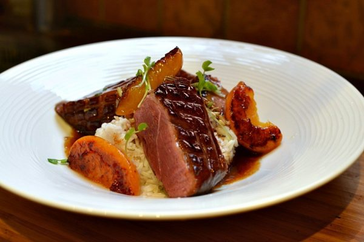
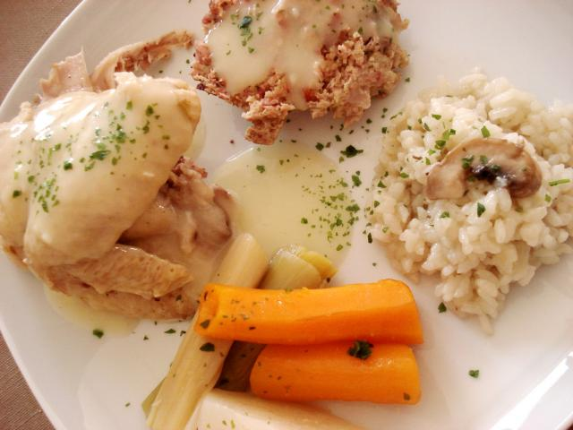
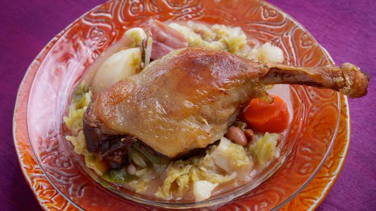
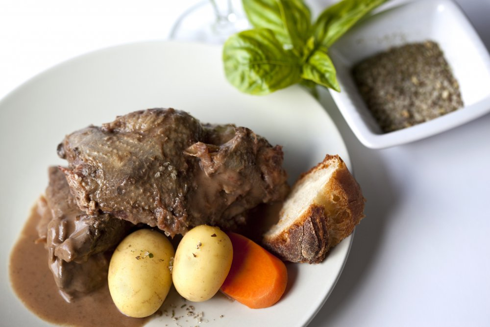
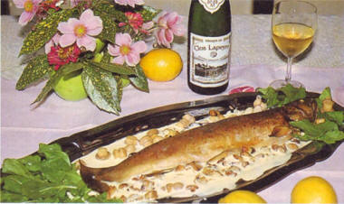
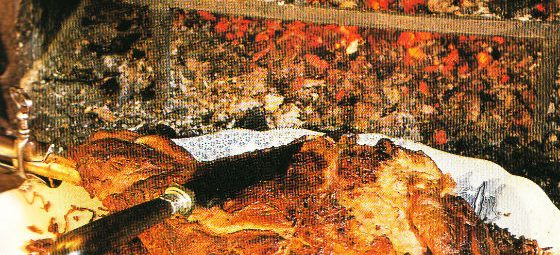

Restaurant: La Fabrique Du Petit Manger
15 Rue Des Affamés
64000 Pau
Tél: +33 05 36 54 67
Couriel: lfdpm@gourmet.fr
N'hésitez pas à appeler pour réserver une table. En cas d'absence, laissez-nous svp vos coordonnées et nous vous rappellerons dans les plus brefs délais. Merci.
Lundi - Vendredi 12h00-14h30 et 19h-22h30 | Samedi 19h00-23h00 | Fermé le dimanche
Le Lundi | Le Mardi | Le Mercredi | Le Jeudi | Le Vendredi | Le Samedi
     Magret Peche Roussane de Monein | La Poule au Pot Henri IV | Garbure à la Francis Jammes | Palombe en Salmis | Truite au Jurançon | Gigot d'Agneau béarnaise de M. Proust